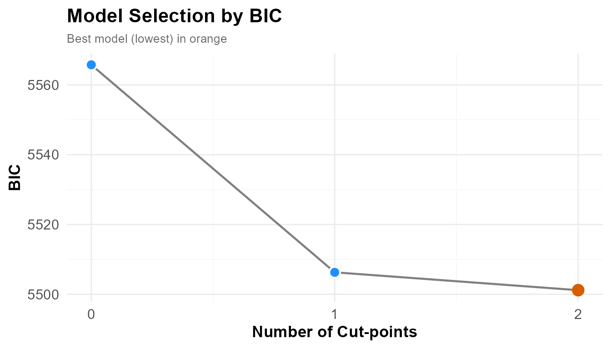
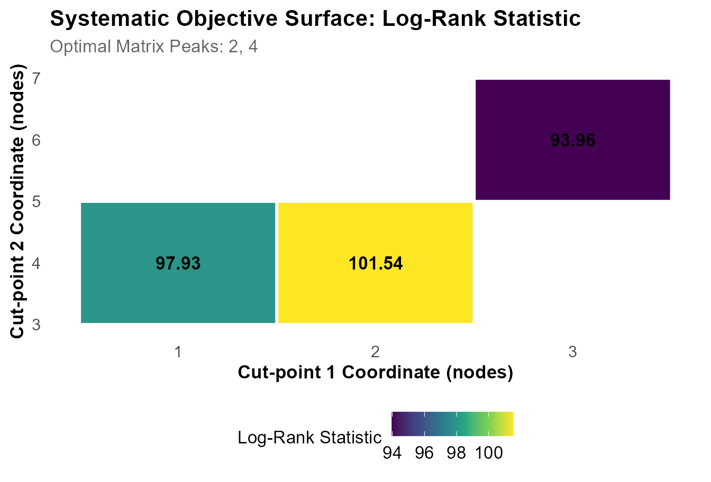
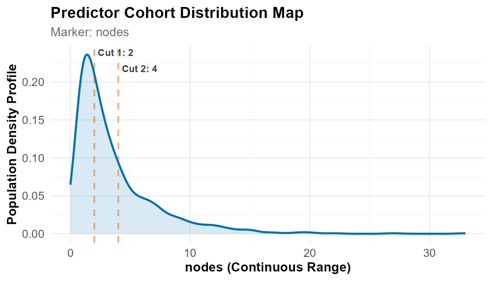
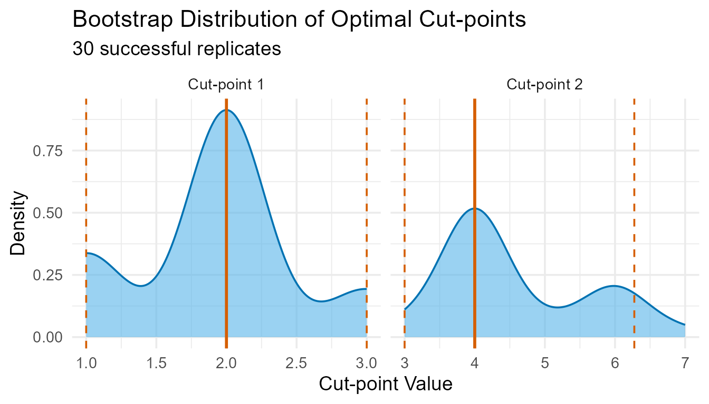

Thresholds in a Discrete Predictor
Lymph node burden in stage III colon cancer
Payton Yau
Suhirthakumar Puvanendran
2026-09-08
Source:vignettes/crc.Rmd
crc.RmdIntroduction
The companion vignette applies the workflow to a continuous marker and arrives at a precise threshold. This one uses a count, and does not.
Counts take few distinct values, cluster at the low end, and admit boundaries only at whole numbers. A threshold cannot shift slightly: it jumps, and a single step can reassign a large block of patients. This vignette shows how that behaves in practice and how to report the result.
The data
The colon dataset comes from two North Central Cancer
Treatment Group trials of adjuvant levamisole and fluorouracil after
resection of stage III colon cancer (Laurie et al., 1989; Moertel et
al., 1990). Stage III means the tumour has spread to regional lymph
nodes but not beyond, and the number of involved nodes is among the
strongest predictors of recurrence.
Staging already uses this count: the AJCC system divides N1 from N2 at four positive nodes. Here we ask what boundary the trial data support, adjusting for age, sex and tumour differentiation grade, using recurrence-free survival capped at five years.
1. Setup
library(dplyr)
+
+ Attaching package: 'dplyr'
+ The following objects are masked from 'package:stats':
+
+ filter, lag
+ The following objects are masked from 'package:base':
+
+ intersect, setdiff, setequal, union
library(survival)
library(ggplot2)
library(knitr)
library(OptSurvCutR)
+ == OptSurvCutR v0.11.0 ==
+ Docs: <https://github.com/paytonyau/OptSurvCutR>
+ Paper: Yau, Payton (2025) bioRxiv 10.1101/2025.10.08.681246
+ Cite: `citation('OptSurvCutR')`
options(cli.num_colors = 1)
covariates_to_adjust_for <- c("age", "sex", "differ")
# One minimum group size, used at every step
NMIN <- 0.15A single nmin value is used at every step. If model
selection and threshold location run under different constraints they
search different spaces, and their results are not directly
comparable.
2. Data preparation
The dataset holds two rows per patient, one for
recurrence and one for death (etype). Modelling both
without filtering would treat each patient as two independent
observations.
data("colon", package = "survival")
analysis_data <- colon %>%
filter(etype == 1) %>% # recurrence records only
select(patient_id = id, time_days = time, status,
nodes, all_of(covariates_to_adjust_for)) %>%
mutate(
time_months = time_days / 30.4375,
status_final = ifelse(time_months > 60, 0, status), # 5-year censoring
time_final = pmin(time_months, 60)
) %>%
select(patient_id, time = time_final, status = status_final,
nodes, all_of(covariates_to_adjust_for)) %>%
filter(complete.cases(time, status, nodes,
across(all_of(covariates_to_adjust_for))))
nrow(analysis_data)
+ [1] 888This leaves 888 patients — the number to report, rather than the 929 recurrence records or the 1,858 rows in the raw file.
It is worth inspecting the predictor before searching:
table(analysis_data$nodes)
+
+ 0 1 2 3 4 5 6 7 8 9 10 11 12 13 14 15 16 17 19 20
+ 2 269 186 119 83 46 42 38 22 20 13 10 11 7 4 6 1 2 2 2
+ 22 27 33
+ 1 1 1Most patients have one to three positive nodes, and the tail is long and sparse. Everything that follows is shaped by this distribution.
3. Finding the cut-points
How many?
BIC is used rather than AIC: a staging rule is confirmatory work, and BIC penalises additional groups more heavily.
number_result <- find_cutpoint_number(
data = analysis_data, predictor = "nodes",
outcome_time = "time", outcome_event = "status",
covariates = covariates_to_adjust_for,
method = "genetic", criterion = "BIC",
max_cuts = 4, nmin = NMIN,
max.generations = NULL, pop.size = NULL,
boundary.enforcement = 2, seed = 123
)
+ ℹ nmin 0.15 is a proportion. Min. group size set to 133.
+ ℹ Finding optimal cut number: method = genetic
+ Running discrete genetic algorithm for 1 cut-point(s)...
+ Running discrete genetic algorithm for 2 cut-point(s)...
+ Running discrete genetic algorithm for 3 cut-point(s)...
+ ! Model with 3 cut-point(s) collapsed: Subgroups violated the minimum 'nmin' constraint of 133 subjects.
+
+ Running discrete genetic algorithm for 4 cut-point(s)...
+ ! Model with 4 cut-point(s) collapsed: Subgroups violated the minimum 'nmin' constraint of 133 subjects.
summary(number_result)
+
+ ── Optimal Cut-point Number Analysis (Genetic) ─────────────────────────────────
+ ✔ Best Model: 2 Cut-points (Criterion: BIC)
+ ℹ Optimal Thresholds: "2, 4"
+
+ ── 1. Model Comparison ──
+ Marker num_cuts BIC Delta_BIC BIC_Weight Evidence
+ 0 5565.76 64.59 0% Minimal
+ 1 5506.29 5.11 7.2% Moderate
+ > 2 5501.18 0.00 92.8% Substantial
+ ── 2. Clinical Risk Cohorts ──
+ Group N Events Median_CI
+ G1 457 168 NA (NA - NA)
+ G2 202 102 51 (33.6 - NA)
+ G3 229 159 15 (12.6 - 20)
+ ── 3. Cox Proportional-Hazards ──
+ Group HR Lower Upper P_Value Signif
+ groupG2 1.565 1.223 2.001 0.000 ***
+ groupG3 2.749 2.208 3.423 0.000 ***
+ age 0.996 0.988 1.004 0.313
+ sex 0.858 0.710 1.038 0.114
+ differ 1.240 1.023 1.502 0.028 *
+ ℹ Overall Model: Concordance = 0.63 | Log-rank p = 0
+
+ ── 4. Time-Dependent Diagnostics (Schoenfeld) ──
+
+ ℹ Insight: The hazard ratios appear to fluctuate over time (Global p = 0.000682).
+ The cut-points successfully separate the subjects, but the relative event risk
+ between these cohorts likely evolves as follow-up time increases.
+
+ ── 5. Analysis Parameters ──
+
+ * Search Method: Genetic
+ * Predictor: nodes
+ * Criterion: BIC
+ * Maximum Cuts: 4
+ * Minimum Group Size (nmin): 133
+ * Covariates: age, sex, differ
plot(number_result)
BIC is minimised at two cut-points, holding 92.8% of the BIC weight; the single-cut model is the runner-up at ΔBIC = 5.11 (7.2%).
Larger models return no valid configuration under
nmin = 0.15, which requires 133 patients per group. In a
separate run with nmin lowered to 0.125 (a floor of 111
patients) the three-cut model completed and was clearly inferior (BIC =
5510.22, ΔBIC = 9.04). The constraint therefore excluded a model rather
than protecting against a better one, though this can only be
established by testing: a message reporting that subgroups violated the
constraint is not evidence that a configuration is infeasible.
The Schoenfeld test in this summary already flags a departure from proportional hazards (p = 0.000682), which we return to in section 5.
Where?
nodes takes few distinct values, so an exhaustive search
is fast and exact.
cutpoint_result <- find_cutpoint(
data = analysis_data, predictor = "nodes",
outcome_time = "time", outcome_event = "status",
covariates = covariates_to_adjust_for,
num_cuts = number_result$optimal_num_cuts,
method = "systematic", criterion = "logrank",
nmin = NMIN,
n_perm = 100, # low for build speed; use >= 1000 when reporting
seed = 123, n_cores = 1
)
+ ℹ nmin 0.15 is a proportion. Min. group size set to 133.
+ ℹ Running regularised systematic search for 2 cut-point(s)...
+ ℹ Searching over 15 candidate positions for 2 cut(s)...
+ ✔ Systematic grid optimisation complete.
+ ℹ Running 100 permutations to calculate adjusted p-value...
summary(cutpoint_result)
+
+ ── Optimal Cut-point Analysis for Survival Data (Systematic) ───────────────────
+ ✔ Optimal Threshold(s): "2, 4"
+ ℹ Permutation-Adjusted P-value (100 runs): 0.0099
+
+ ── 1. Stratified Risk Cohorts ──
+
+ Group N Events Median_Time OS Rate at T=60
+ G1 457 168 NR (Not Reached) 62.6% (58.3-67.2)
+ G2 202 102 51 48.7% (42.2-56.2)
+ G3 229 159 15 29.8% (24.3-36.4)
+ ── 2. Cox Proportional-Hazards ──
+ Group HR Lower Upper P_Value Signif
+ G2 1.565 1.223 2.001 0.000 ***
+ G3 2.749 2.208 3.423 0.000 ***
+ age 0.996 0.988 1.004 0.313
+ sex 0.858 0.710 1.038 0.114
+ differ 1.240 1.023 1.502 0.028 *
+ ℹ Overall Model: Concordance = 0.63 | Log-rank p = 0
+
+ ── 3. Time-Dependent Diagnostics (Schoenfeld) ──
+
+ ℹ Insight: The hazard ratios appear to fluctuate over time (Global p = 0.000682).
+ The cut-points successfully separate the subjects, but the relative event risk
+ between these cohorts likely evolves as follow-up time increases.
+
+ ── 4. Analysis Parameters ──
+
+ • Search Method: Systematic
+ • Predictor: nodes
+ • Number of cuts: 2
+ • Minimum group size (nmin): 133
+ • Covariates: age, sex, differ
+ • Permutations: 100The thresholds are 2 and 4 positive nodes:
| Group | Nodes | N | Events | Median RFS | 5-year RFS |
|---|---|---|---|---|---|
| G1 (Low) | 1–2 | 457 | 168 | Not reached | 62.6% (58.3–67.2) |
| G2 (Intermediate) | 3–4 | 202 | 102 | 51 months | 48.7% (42.2–56.2) |
| G3 (High) | ≥ 5 | 229 | 159 | 15 months | 29.8% (24.3–36.4) |
Adjusted hazard ratios are 1.57 and 2.75 relative to G1. Among the covariates only differentiation grade is independently associated with recurrence (HR = 1.24, p = 0.028). Concordance is 0.63 — real but moderate discrimination.
Note that G1’s five-year survival is 62.6%, not 58.3%; the lower
figure is the confidence bound. The permutation p of 0.0099 is
exactly 1/(100+1), the floor for n_perm = 100.
plot(cutpoint_result, type = "surface")
Because the search was exhaustive, every evaluated pair is retained. A broad bright region rather than a sharp peak indicates that many threshold pairs score almost as well as the winner — an early sign that the boundaries will not be stable.
plot(cutpoint_result, type = "distribution")
The thresholds are overlaid on the distribution of node counts. The contrast with a continuous marker is visible here: values stack at each integer, so the boundaries fall between discrete columns rather than within a smooth density.
4. Stability
validation_result <- validate_cutpoint(
cutpoint_result = cutpoint_result,
num_replicates = 30, # reduced for build speed; use >= 500 when reporting
n_cores = 1, seed = 123 # single core: vignette builds cannot use parallel workers
)
+ ℹ Using random seed 123 for reproducibility.
+ ℹ Bootstrap `nmin` not set. Using 119 (90% of original) to improve stability.
+ ℹ Validating 2 cut(s) from 'systematic' search using 'logrank' over regularised coordinate lattice.
+ ℹ Running 30 replicates sequentially (n_cores = 1).
+ Bootstrapping ■■■■■■■■■■■■ 37% | ETA: 2sBootstrapping ■■■■■■■■■■■■■ 40% | ETA: 2sBootstrapping ■■■■■■■■■■■■■■■■ 50% | ETA: 1sBootstrapping ■■■■■■■■■■■■■■■■■■■■■■■■ 77% | ETA: 1sBootstrapping ■■■■■■■■■■■■■■■■■■■■■■■■■■ 83% | ETA: 0sBootstrapping ■■■■■■■■■■■■■■■■■■■■■■■■■■■■■ 93% | ETA: 0s ✔ 30 replicates completed.
summary(validation_result)
+ Cut-point Stability Analysis (Bootstrap)
+ ----------------------------------------
+ Original Optimal Cut-point(s): 2, 4
+
+ Bootstrap Distribution Summary
+ -----------------------------
+ Cut Mean SD Median Q1 Q3
+ 25% Cut1 1.900 0.607 2 2 2.00
+ 25%1 Cut2 4.567 1.040 4 4 5.75
+
+ 95% Confidence Intervals
+ ------------------------
+ Lower Upper
+ Cut 1 1 3.000
+ Cut 2 3 6.275
+
+ Validation Parameters
+ ---------------------
+ Replicates Requested: 30
+ Successful Replicates: 30 / 30 ( 100 %)
+ Failed Replicates: 0
+ Cores Used: 1
+ Seed: 123
+ Minimum Group Size (nmin): 119
+ Method: systematic
+ Criterion: logrank
+ Covariates: age, sex, differ
+
+
+ Stability Assessment:
+ ---------------------
+ Maximum CI Width (Relative to 10th-90th Percentile Range): 46.8%
+ ! Model Status: CAUTION (Tier 3)
+ Moderate instability detected (46.8%), and Confidence Intervals overlap.| Tier | Overlap | Width | Meaning |
|---|---|---|---|
| 1 — OPTIMAL | None | < 30% | Precise boundaries, distinct groups |
| 2 — DISTINCT | None | Any | Groups distinct, boundaries move |
| 3 — CAUTION | Present | 30–60% | Adjacent groups not cleanly separated |
| 4 — UNSTABLE | Present | > 60% | Boundaries not reproducible |
These are two independent diagnostics rather than an ordinal scale, and the percentages are practical conventions.
plot(validation_result)
plot_validation(validation_result, focus_cuts = c(1, 2),
main = "Cuts 1 and 2 across resamples")
The resampled boundaries sit on a handful of discrete positions rather than forming a smooth cloud. This is characteristic of a count predictor: the boundary can only take whole-number values, so it jumps between them.
Thirty replicates is sufficient to illustrate the output. With few replicates the intervals are narrower than they should be, so use at least 500 replicates for any reported analysis.
Results at 500 replicates
| Model | Threshold(s) | Widest interval | Tier |
|---|---|---|---|
| Two cut-points (BIC choice) | 2, 4 | 42.9% | 3 — CAUTION |
| One cut-point | 4 | 57.1% | 2 — DISTINCT |
For the two-cut model the intervals are 1–3 and 3–6. They meet at 3, so adjacent groups are not cleanly separated. The lower boundary is reasonably precise at 28.6%; the upper one is not.
Reducing to a single cut-point removes the overlap but not the width:
cut1 <- find_cutpoint(
data = analysis_data, predictor = "nodes",
outcome_time = "time", outcome_event = "status",
covariates = covariates_to_adjust_for,
num_cuts = 1, method = "systematic", criterion = "logrank",
nmin = NMIN, n_perm = 1000, seed = 123, n_cores = 2
)
validate_cutpoint(cut1, num_replicates = 500, n_cores = 2, seed = 123)The threshold is 4 positive nodes with a bootstrap interval of 2–6. The median across resamples is 4 and the interquartile range 3–4, so the boundary is usually recovered, although the tail extends to 2 and 6. With one boundary there is no separation to assess, so the model is graded on width alone.
The single-cut model was already the BIC runner-up, and was therefore a candidate on model-selection grounds before any stability result. This is worth stating when reporting a simplification made after inspecting the bootstrap.
5. Reporting and diagnostics
Group composition
grouped <- plot(cutpoint_result, return_data = TRUE)
grouped %>%
group_by(group) %>%
summarise(
Nodes = paste0(min(factor), " - ", max(factor)),
N = n(),
Events = sum(event),
Mean_Age = round(mean(age), 1),
Grade = round(mean(differ), 2)
) %>%
kable(caption = "Composition of the three nodal burden groups")| group | Nodes | N | Events | Mean_Age | Grade |
|---|---|---|---|---|---|
| 1 | 0 - 2 | 457 | 168 | 60.7 | 2.02 |
| 2 | 3 - 4 | 202 | 102 | 59.8 | 2.02 |
| 3 | 5 - 33 | 229 | 159 | 58.0 | 2.19 |
Checking this table before reporting is worthwhile. Mean age is similar across groups, so the survival gradient is not age acting through node count. Mean differentiation grade rises with nodal burden, which is why it is included as an adjustment variable.
Hazard ratios
plot(cutpoint_result, type = "forest",
reference_group = "G1",
main = "Adjusted hazard ratios for nodal burden groups")
The estimates are adjusted for age, sex and differentiation grade, so nodal burden is not standing in for those. Two qualifications apply: they were estimated on the same data that selected the thresholds and are therefore optimistic, and because proportional hazards does not hold (below) each is an average effect over the 60-month window.
Proportional hazards

The Schoenfeld test returns global p = 0.000682, so proportional hazards does not hold. The effect of nodal burden is strongest early and attenuates, consistent with most stage III recurrences occurring within two years. The grouping remains valid; the hazard ratios should be described as averages over the 60-month window rather than constant multipliers.
Landmark analysis
plot(cutpoint_result, type = "landmark", landmark = 12,
legend.title = "Nodal burden group")
+ ℹ Generating Landmark Survival Curve for survivors remaining at time milestone: 12
A landmark analysis restarts the clock at 12 months among patients still event-free. Separation persisting there indicates the groups carry information beyond early events. This addresses immortal time bias rather than eliminating it.

6. Conclusion
Node count separates these 888 patients into three groups with clearly different recurrence-free survival, at 2 and 4 positive nodes. The result is highly significant.
The boundaries are not precise. Across 500 resamples the first moves between 1 and 3 and the second between 3 and 6, and the two overlap. Reducing to one cut-point removes the overlap but leaves an interval of 2–6 around a threshold of 4.
The conclusion is not that node count fails to predict recurrence, which it plainly does, but that a discrete predictor with few distinct values supports a range rather than a single value. Recurrence risk rises somewhere around three to five positive nodes. A rule using four is defensible; a claim that four is specifically optimal is not.
The data-driven optimum coincides with the AJCC N1/N2 boundary at four nodes. Given the width of the interval this is best described as consistent with the staging convention rather than as independent support for it.
For discrete predictors: tabulate the values first, prefer
method = "systematic", use one nmin
throughout, expect wide intervals, and report the boundary as a range
when the width is large.
References
Laurie JA, Moertel CG, Fleming TR, et al. (1989). Surgical adjuvant therapy of large-bowel carcinoma. J Clin Oncol 7:1447–1456.
Moertel CG, Fleming TR, Macdonald JS, et al. (1990). Levamisole and fluorouracil for adjuvant therapy of resected colon carcinoma. N Engl J Med 322:352–358.
sessionInfo()
+ R version 4.6.1 (2026-06-24 ucrt)
+ Platform: x86_64-w64-mingw32/x64
+ Running under: Windows 11 x64 (build 26200)
+
+ Matrix products: default
+ LAPACK version 3.12.1
+
+ locale:
+ [1] LC_COLLATE=English_United Kingdom.utf8
+ [2] LC_CTYPE=English_United Kingdom.utf8
+ [3] LC_MONETARY=English_United Kingdom.utf8
+ [4] LC_NUMERIC=C
+ [5] LC_TIME=English_United Kingdom.utf8
+
+ time zone: Europe/London
+ tzcode source: internal
+
+ attached base packages:
+ [1] stats graphics grDevices utils datasets methods base
+
+ other attached packages:
+ [1] OptSurvCutR_0.11.0 knitr_1.51 ggplot2_4.0.3 survival_3.8-9
+ [5] dplyr_1.2.1
+
+ loaded via a namespace (and not attached):
+ [1] gtable_0.3.6 xfun_0.60 bslib_0.12.0 htmlwidgets_1.6.4
+ [5] rstatix_1.1.0 lattice_0.22-9 vctrs_0.7.3 tools_4.6.1
+ [9] generics_0.1.4 parallel_4.6.1 tibble_3.3.1 pkgconfig_2.0.3
+ [13] Matrix_1.7-6 RColorBrewer_1.1-3 S7_0.2.2 desc_1.4.3
+ [17] lifecycle_1.0.5 compiler_4.6.1 farver_2.1.2 textshaping_1.0.5
+ [21] codetools_0.2-20 carData_3.0-6 htmltools_0.5.9 sass_0.4.10
+ [25] yaml_2.3.12 Formula_1.2-6 pillar_1.11.1 pkgdown_2.2.1
+ [29] car_3.1-5 ggpubr_1.0.0 jquerylib_0.1.4 tidyr_1.3.2
+ [33] MASS_7.3-66 cachem_1.1.0 survminer_0.5.2 iterators_1.0.14
+ [37] rgenoud_5.9-0.11 abind_1.4-8 foreach_1.5.2 nlme_3.1-170
+ [41] tidyselect_1.2.1 digest_0.6.39 purrr_1.2.2 labeling_0.4.3
+ [45] splines_4.6.1 fastmap_1.2.0 grid_4.6.1 cli_3.6.6
+ [49] magrittr_2.0.5 patchwork_1.3.2 broom_1.0.13 withr_3.0.3
+ [53] scales_1.4.0 backports_1.5.1 rmarkdown_2.31 otel_0.2.0
+ [57] gridExtra_2.3.1 ggsignif_0.6.4 ragg_1.5.2 evaluate_1.0.5
+ [61] doParallel_1.0.17 viridisLite_0.4.3 mgcv_1.9-4 rlang_1.3.0
+ [65] Rcpp_1.1.2 isoband_0.3.0 glue_1.8.1 rstudioapi_0.19.0
+ [69] jsonlite_2.0.0 R6_2.6.1 systemfonts_1.3.2 fs_2.1.0